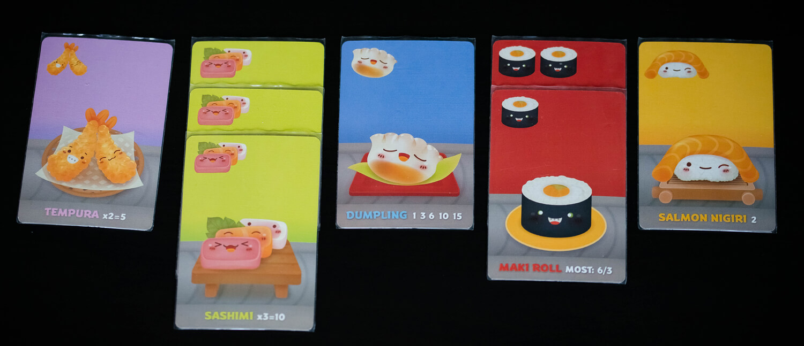
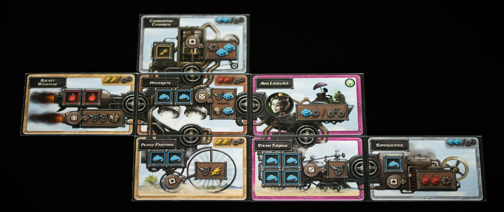

We need to talk about card design. You might think that designing a card is just slapping all the necessary information on the card in some arbitrary way, but that’s almost as far from the truth as you can come. You have to customize the card design to how the game is being played, and how the cards are being used.
One of the most common ways that cards are being used in games is in the hands of the players. It is also one of the most challenging for the designer, because such a small part of the card is visible while in a player's hand of cards. The designer therefore has to figure out what information is most important for the players at this point of the game, and place that information in the upper left corner, the corner that becomes visible when fanning the cards with the rightmost card on the top which is the most common way of fanning cards. However, there are people that prefer to fan their cards the other way, so the designer might need to consider having the most important information in both upper corners instead.
Here are three examples of games where the most important information is visible in the upper left corner.
In Bohnanza, you are trying to match beans of the same type, making the bean type the most important. Other information on the cards are how many of the specific bean there are in the deck and how many of the bean you need to get a given point value. Players that have played the game a couple of times get an idea of how valuable each bean type is, which means that information does not have to be as available as the bean type itself.
With quite similar design restrictions as Bohnanza, Sushi Go has a miniature picture of what type of card it is in the upper left corner, and more specific information about what that card type does on the rest of the cards. As Sushi Go is a drafting game, getting a quick overview is important to speed up the game as well.
In Citadels, the cost of playing the card, as well as the points that card will grant since they are the same, is instead what is placed in the upper left corner. This makes it easy for players to see what cards they are able to play at a given moment, and therefore could benefit from checking other details of, like the type which in Citadels only matters with some specific characters as well as at the end of the game.
Many card games include that you somehow play or keep a number of cards in front of you in a tableau. If this is the case, the designer has to consider what information is important when the cards are placed in the tableau. This is especially true if each player will have quite a large tableau, meaning they have to, or will want to, stack their cards in order to make the game take up less space.
Using the same games as before as examples (which helps you see that you will often need to design the same card for several different uses), we can take a look at how you can go about designing cards for tableau building.
In Bohnanza there will only ever be the same type of beans stacked on top of each other, so the design challenges are really very small here. This is because the topmost card will always be fully visible and therefore display all the information available on the cards. However, you do need to be able to count how many cards are in each stack, and it is preferable if you are able to double check that no beans of a different type are present in the pile. The miniatures of the beans present in the upper corners of the cards help with this.
The cards in Citadels can actually be stacked so no information aside from the art and explanatory text (only present on some cards) is covered up. This is done by placing all information on two of the sides that meet in a corner.
Once again the design restrictions for Sushi Go are quite similar to those of Bohnanza. In the top part of the card a miniature of the card type is present, which for most cards only serves as a way to make it clear that the card is of that type. For the maki rolls, the full row on top is used to show how many rolls that card represents. As long as you stack cards of the same type on top of each other, you can use the top card when figuring out the point yield. However, one could argue that they could have designed the cards so you get the choice to stack all of them together, thought that would make the scoring much harder, since most of them score differently depending on how many you have collected of the given type. Maybe this design choice was made to force players to sort their cards, making other parts of the game more streamlined.
Steampunk Rally also uses their cards for a type of tableau building, but not one where stacking the cards is really an option. Instead the cards function kind of like tiles that need to be connected to each other.
For these types of cards it is important that it is clear what counts as connected. However, the most important information on the cards is the action you can take with the cards, and how they work. Even if you don’t know it already, you can kind of figure out that you place dice on the square spaces on the cards, and they even show what color dice you need to use. Then they show you what you get out of placing dice there. This is the central part of the cards and really is allowed to take up as much space as is necessary, to make it really clear what you use the cards for.
To summarize, you need to think about a lot of things when you design cards. First, you need to figure out in what way the cards will be used in the game. Then you need to understand how that will affect what parts of the cards will be visible in a given situation. You will also need to figure out what information is the most important, and what information is not really necessary, in that given situation. Then you have to design the card so the most important information for the situation is always visible when the card is placed in that situation.
And we haven’t even gone in to how you design the cards so the information is actually clear when it is visible! We’ll save that for another time.